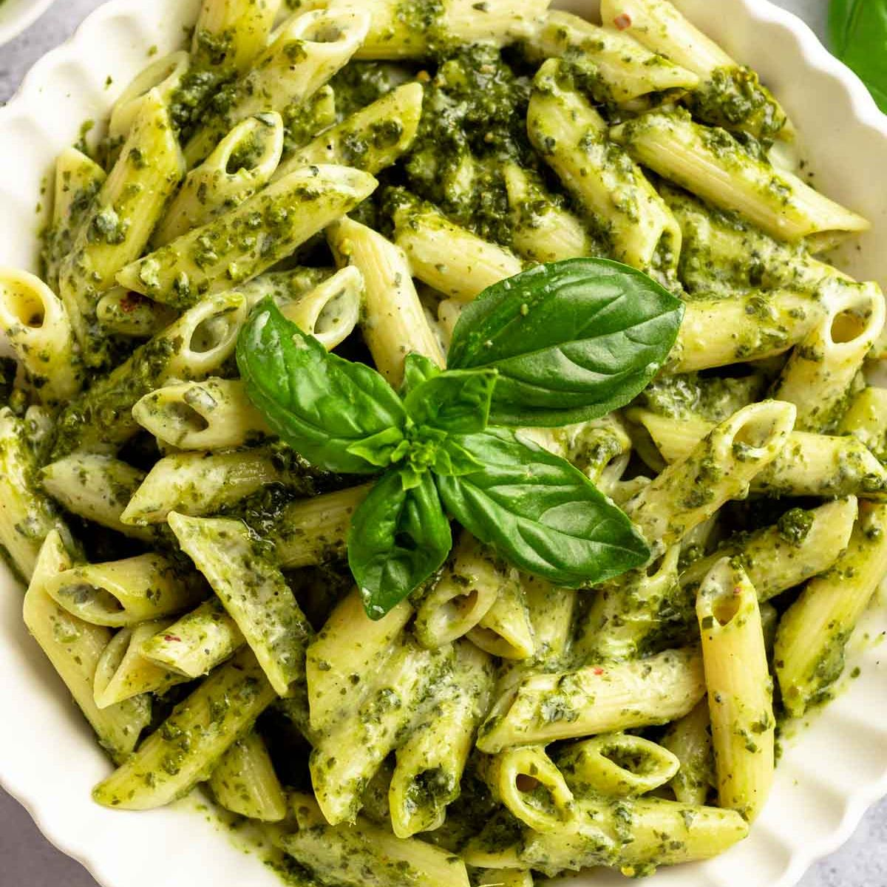

Recetas de pastas y salsas italianas
Pasta fresca al huevo

Ingredientes
- 400 gramos de harina tipo 00 (harina de trigo blanca)
- 4 huevos grandes
Instrucciones
-
Coloca la harina en un recipiente grande y haz un hueco en el centro,
formando un volcán.
-
Rompe los huevos en el hueco del volcán y, con un tenedor, bátelos
ligeramente.
-
Comienza a mezclar los huevos con la harina, incorporando gradualmente
la harina desde los bordes del volcán hacia el centro. Continúa
mezclando hasta que la masa comience a unirse.
-
Una vez que la masa esté lo suficientemente unida, transfiérela a una
superficie de trabajo limpia y enharinada.
-
Amasa la masa durante unos 10 minutos o hasta que esté suave y
elástica. Si la masa está demasiado seca, puedes añadir un poco de
agua; si está demasiado pegajosa, puedes añadir un poco más de harina.
-
Forma la masa en una bola y cúbrela con un paño o envuélvela en film
transparente. Deja reposar la masa durante al menos 30 minutos a
temperatura ambiente. Esto permitirá que la masa se relaje y sea más
fácil de trabajar.
-
Después del reposo, divide la masa en porciones más pequeñas.
Espolvorea harina sobre la superficie de trabajo y usa un rodillo para
estirar cada porción de masa hasta obtener un grosor deseado. Puedes
utilizar una máquina de pasta o un rodillo para este paso.
-
Una vez estirada la masa, puedes cortarla en la forma de pasta que
prefieras, ya sea fettuccine, tagliatelle, lasaña, etc.
-
Cocina la pasta en abundante agua con sal hirviendo durante unos
minutos, hasta que esté al dente. El tiempo de cocción variará según
el grosor y el tipo de pasta que hayas elegido.
- Escurre la pasta y sírvela con la salsa de tu elección.
Pasta a la amatriciana
Ingredientes (para 4 personas):
- 400 gramos de pasta (preferiblemente espaguetis)
-
150 gramos de panceta o guanciale (tocino italiano curado hecho con
mejillas de cerdo)
- 1 cebolla pequeña
- 400 gramos de tomates pelados en lata
- 1/2 taza de vino blanco
- 50 gramos de queso pecorino rallado
- Aceite de oliva virgen extra
- Sal y pimienta negra al gusto
Instrucciones
-
En una olla grande, hierve agua con sal y cocina la pasta según las
instrucciones del paquete hasta que esté al dente.
-
Mientras tanto, en una sartén grande, calienta un poco de aceite de
oliva a fuego medio. Agrega la panceta o guanciale cortada en trozos
pequeños y cocina hasta que esté dorada y crujiente.
-
Agrega la cebolla finamente picada a la sartén y cocina hasta que esté
transparente.
-
Añade el vino blanco y deja que se evapore durante unos minutos.
-
Agrega los tomates pelados en lata (previamente triturados o cortados
en trozos pequeños) a la sartén. Cocina a fuego lento durante unos
15-20 minutos para que los sabores se mezclen y la salsa espese
ligeramente. Agrega sal y pimienta negra al gusto.
-
Cuando la pasta esté lista, escúrrela y reserva un poco de agua de
cocción.
-
Agrega la pasta cocida a la sartén con la salsa de amatriciana. Mezcla
bien para que la salsa cubra toda la pasta. Si la salsa parece
demasiado espesa, agrega un poco de agua de cocción reservada para
obtener la consistencia deseada.
-
Espolvorea queso pecorino rallado por encima de la pasta y mezcla
nuevamente.
-
Sirve la pasta a la amatriciana caliente y disfruta de este clásico
plato italiano.
Pesto

Ingredientes (para 4 personas):
- 50 gramos de hojas de albahaca fresca
- 30 gramos de queso pecorino romano rallado
- 30 gramos de queso parmesano rallado
- 30 gramos de piñones
- 2 dientes de ajo
- 100 ml de aceite de oliva virgen extra
- Sal al gusto
Instrucciones:
-
Enjuaga las hojas de albahaca fresca y sécalas suavemente con papel de
cocina.
-
En un mortero, tritura los piñones y los dientes de ajo hasta obtener
una pasta gruesa.
-
Agrega las hojas de albahaca al mortero y continúa triturando hasta
que se mezclen con los piñones y el ajo, formando una pasta homogénea.
-
Añade el queso pecorino romano y el queso parmesano rallado a la
mezcla en el mortero. Tritura nuevamente para combinar todos los
ingredientes.
-
Agrega gradualmente el aceite de oliva virgen extra mientras sigues
triturando la mezcla hasta obtener una consistencia suave y cremosa.
-
Prueba el pesto y agrega sal al gusto. Ten en cuenta que los quesos ya
aportan sal, así que asegúrate de probar antes de agregar demasiada.
-
Transfiere el pesto a un frasco de vidrio limpio y cúbrelo con una
capa delgada de aceite de oliva virgen extra para conservarlo fresco.
-
El pesto está listo para ser utilizado como salsa para pasta, untado
en pan o como aderezo en diversas preparaciones. Almacenado en el
refrigerador, puede durar aproximadamente una semana.
Carbonara

Ingredientes (para 4 personas):
- 320 gramos de espaguetis (80g por ración)
- 200 gramos de guanciale (panceta en su defecto)
- 60 gramos de queso pecorino
- 6 yemas de huevo
- Pimienta negra recién molida
- Sal al gusto

Instrucciones:
-
Comienza por partir la panceta en trozos gruesos y rallar el queso pecorino. Reserva estos ingredientes. Aprovecha también para separar las yemas de las claras de los huevos.
-
Seguidamente, vamos a cocer los espaguetis. En un recipiente amplio calienta agua y cuando llegue a su punto de ebullición echa un buen pellizco de sal. Pon a cocer la pasta el tiempo que se indica en el paquete. Luego la vamos a saltear, por lo que deberás dejarla 1 minuto menos de lo recomendado. También puedes usar pasta fresca, por supuesto.
-
Por otro lado, saltea la panceta en una sartén grande hasta que la parte grasa esté transparente y ligeramente tostada. En principio no es necesario incorporar más aceite, pues la propia panceta irá soltando grasita.
-
En otro recipiente mezcla las yemas con el queso pecorino (del cual habrás reservado un poco para espolvorear al final). Sazona con pimienta negra recién molida y un pellizco de sal. Añade un par de cucharadas del agua de la cocción de la pasta para hacer más fluida esta salsa carbonara.
-
Cuando a la pasta le quede 1 minuto de cocción para estar lista, añádela a la sartén y saltéala a fuego vivo durante otro minuto. Así se impregnará del sabor y la grasa que haya soltado la panceta
-
Retira la sartén del fuego y añade la mezcla de yemas y pecorino. Remueve bien teniendo cuidado de que no se cuaje el huevo. Añade alguna cucharada más del agua de la cocción para que la salsa quede más ligada.
-
Prueba el punto de sal y pimienta. Espolvorea el resto del pecorino por encima de los espagueti y sírvelos recién hechos. Y a disfrutar de la auténtica carbonara italiana.